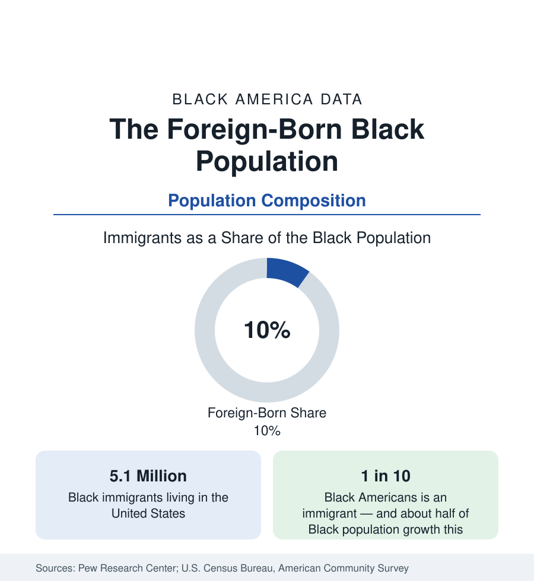

Black Census
The Foreign-Born Black Population: One in Ten Black Americans
About 5.1 million Black immigrants — one in ten Black Americans — have remade the population's composition. The Pew and Census data on origins, settlement, and attainment.

One in ten Black Americans is an immigrant. The Pew Research Center's analyses of census data count about 5.1 million Black immigrants in the United States — a population that has multiplied several-fold since 1980 and that accounts, together with immigrants' American-born children, for a large share of Black population growth in the twenty-first century. The foreign-born Black population is not a footnote to the national profile in this section; it is one of its structural facts, concentrated in the great gateway metros, reshaping ancestry, language, education, and income statistics wherever it settles. This article reports the data.
Two Great Streams: The Caribbean and Africa
Black immigration divides into two streams of roughly equal size. The older is Caribbean: Jamaica and Haiti supply the largest national groups — each on the order of 700,000 or more immigrants — followed by Trinidad and Tobago, Guyana, and the Dominican Republic, whose Afro-descendant migrants are classified within the Hispanic population in some tables. The newer stream is African, and it is the fastest-growing segment of Black immigration: Nigeria is now among the largest single countries of origin, with Ethiopia, Ghana, Kenya, and Somalia also supplying large populations. The African share of Black immigration has climbed steadily across the survey era and, on current trends in the admissions and survey data, will define the population's growth in the coming decades.
Where Immigrants Settle
Settlement is intensely metropolitan. The New York metro holds the largest Black immigrant population in the nation, followed by Miami–South Florida — where the Haitian community is the largest in the country — then Washington, Boston (with its Haitian and Cape Verdean communities), Atlanta, Houston, and Los Angeles. In several of these metros, immigrants and their children make up a third to a half of the Black population. The geography explains many of this reference's local patterns: the birthplace splits required in the New York and Florida profiles, Houston's African corridor, and the Boston area's distinctive Black composition all follow from the settlement map recorded here.
Attainment and Income in the Data
The survey data describe two streams with different profiles. African immigrants record educational attainment above the national average — roughly two in five hold a bachelor's degree or higher, and among Nigerian immigrants the share is well above half — reflecting the skill-selective channels, including student visas and the diversity visa program, through which much African migration flows. Caribbean immigrants record attainment closer to the national Black average, with long-established homeownership traditions in the gateway suburbs. Median incomes for Black immigrant households generally run above the native-born Black median, though below the national median, and second-generation outcomes converge toward the patterns of the wider Black population — the standard arc the assimilation literature describes.
The Second Generation
Counting only the foreign-born understates immigration's demographic weight. The American-born children of Black immigrants — the second generation — number in the additional millions, are counted as native-born in every table in this reference, and are concentrated in the same gateway metros, where they form a large share of Black school enrollment. Demographers project that immigration and the second generation together account for the majority of Black population growth across the coming decades, gradually shifting the ancestry composition of Black America from overwhelmingly descended from the enslaved population of the United States to a population in which Caribbean and African lineages are a large and growing presence.
Reading the Population Statistics
Language
The census language data register the same diversity: a large share of Black immigrant households speak a language other than English at home — French and Haitian Creole in the Caribbean communities, Spanish among Afro-Latino migrants, and Amharic, Somali, Yoruba, Igbo, Swahili, and Tigrinya across the African streams — making Black America a substantially multilingual population in its gateway metros, a fact with direct consequences for the schools, hospitals, and public services whose data appear throughout this reference.
The methodological conclusion governs the whole census section: Black America is a composite, and its averages blend populations with different histories, languages, and starting points. Wherever the immigrant share is large — a state, a metro, a school system — this reference reports the birthplace and ancestry splits alongside the headline figure, because the headline alone conceals the two or three distinct populations that produced it. The foreign-born profile is therefore not one article among many; it is the key to reading the rest.
More in Black Census
The Black Population of the United States: Size, Definitions, and Distribution
The Black population of the United States totals 52.8 million — 15.4 percent of the nation. How the Census Bureau defines and counts the population, and where it lives.
Black Median Household Income in the United States
Black median household income stands at $56,490 in the Census Bureau's annual income report — how the figure is measured, how it compares, and what drives it.
The Black Poverty Rate: Levels, Children, and the Long Trend
The official Black poverty rate is 17.1 percent — against 11.1 percent nationally and 7.7 percent for non-Hispanic White Americans. How poverty is measured and what the data show.
Source: Pew Research Center analyses of the American Community Survey and decennial census; U.S. Census Bureau, American Community Survey.